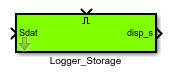
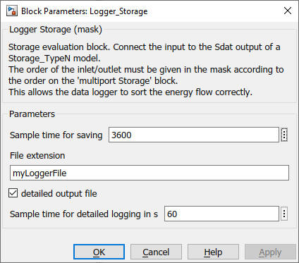

Logger_Storage
Path: carnot/Outputs/Logger
Purpose
Creates data files which enable to evaluate a Storage_TypeN -model of Carnot by using
cs_energy_storage
m-function.
Inputs:
- Sdat : output data of storage model
- Enable : "true" or "1" activates the logging of the data in the
files
Output:
- disp_s : displaying data of the storage model
- files : "storageoutput_extension.mat" and "storagedetailoutput_extension.mat" where extension
is a string you can choose in the parameters of the block.
where extension is a string you can choose in the parameters of the block.
Description
The file "storagedetailoutput_extension.mat" is only written
if the parameter "detailed output" is activated.
Detailed outputs
are written only when the heating (or cooling) system massflow is above the
threshold value.
The files are saved in the
current working directory of Matlab unless you specify a complete pathname.
The files contain the following informations in timeseries variables :
- stg.storageType storage type number
- stg.volume storage volume in m3
- stg.energy structure with
- stg.energy.internal change in energy between simulation start and
end in Joule
- stg.energy.losses thermal losses to ambient in Joule (negative for
losses)
- stg.Welec_in energy input by the electric heater in Joule
- stg.Tnodes storage node temperatures in degree Celsius
- stg.Tamb ambient temperature in degree Celsius
- stg.Pipe1 structure of pipe 1 with
- stg.Pipe1.T_in inlet temperature of pipe 1 in degree Celsius
- stg.Pipe1.T_out outlet temperature of pipe 1 in degree Celsius
- stg.Pipe1.Mass mass (time intergal of massflow) through pipe 1 in kg
- stg.Pipe1.Cycles number of massflow on/off cycles in pipe 1
- stg.Pipe1.OpTime operation time (time with massflow) of pipe 1 in s
- stg.Pipe1.Q energy exchange from or to storage via pipe 1 in Joule
- stg.Pipe2 structure of pipe 2
- ... (same information as pipe 1)
- stg.Pipe3 structure of pipe 3
- (same information as pipe 1)
- stg.Pipe4 structure of pipe 4
- (same information as pipe 1)
- stg.Pipe5 structure of pipe 5
- (same information as pipe 1)
- stg.HX1 structure of heat exchanger 1 with
- stg.HX1.T_in inlet temperature of heat exchanger 1 in degree Celsius
- stg.HX1.T_out outlet temperature of heat exchanger 1 in degree
Celsius
- stg.HX1.Mass mass (time intergal of mass flow) through heat
exchanger 1 in kg
- stg.HX1.Cycles number of mass flow on/off cycles in heat exchanger 1
- stg.HX1.OpTime operation time (time with mass flow) of heat
exchanger 1 in s
- stg.HX1.Q energy exchange from or to storage via heat exchanger 1 in
Joule
- stg.HX2 structure of heat exchanger 2
- (same information as HX1)
- stg.HX3 structure of heat exchanger 3
- (same information as HX1)
For a full list of data point names see
2_Basic_Concepts.
Parameters and Dialog Box
- sample time for data saving in s (standard value 3600 s)
- File extension: the text string replaces "extension"
in the filename "heatingoutput_extension.mat"
- checkbox for additional detailed data file
(some evaluations in cs_energy_storage
are only possible with the detailed file, e.g. mean operation temperature)
-
sample time for detailed logging (default value of 60 s, be carefull when
changing this value)
- Threshold for the heating or cooling power to
activate the detailed logging.

Characteristics
Direct Feedthrough Yes
Sample time entered
by user in block parameters
Vectorized Yes